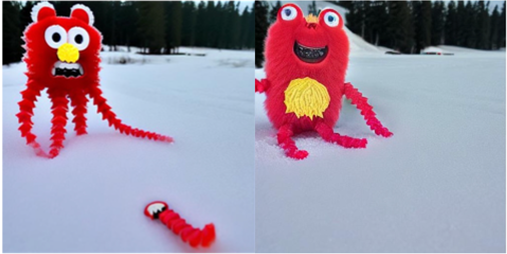
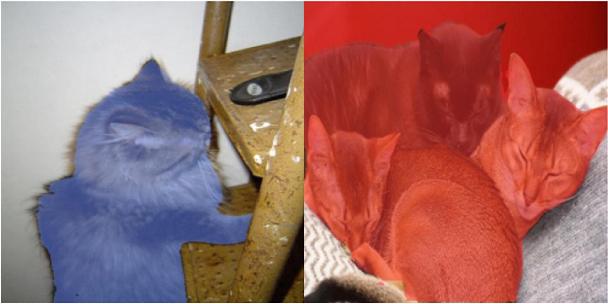

Publications

DreamMatcher: Appearance Matching Self-Attention for Semantically-Consistent Text-to-Image Personalization
Jisu Nam, Heesu Kim, DongJae Lee, Siyoon Jin, Seungryong Kim, Seunggyu Chang
under review at IEEE Conference on Computer Vision Pattern Recognition (CVPR) 2024

Diffusion Model for Dense Matching
Jisu Nam, Gyuseong Lee, Sunwoo Kim, Hyeonsu Kim,, Hyoungwon Cho, Seyeon Kim, Seungryong Kim
International Conference on Learning Representations (ICLR) 2024 , Oral, 1.2% acceptance rate
DiffFace: Diffusion-based Face Swapping with Facial Guidance
Kihong Kim, Yunho Kim, Seokju Cho, Junyoung Seo, Jisu Nam, Kychul Lee, Seungryong Kim and KwangHee Lee
arXiv, 2022

Neural Matching Fields: Implicit Representation of Matching Fields for Visual Correspondence
Sunghwan Hong, Jisu Nam, Seokju Cho, Susung Hong, Sangryul Jeon, Dongbo Min, and Seungryong Kim
Neural Information Processing Systems (NeurIPS) 2022
